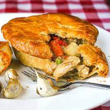

Turkey pot pie

Turkey pot pie recipe made with leftover turkey
Chunks of white and dark turkey meat are mixed with peas,
carrots, and beans in a creamy sauce that screams comfort
food. Using ready-made pastry dough and frozen vegetables
cuts down on prep time.
These leftover turkey pot pies are
so delicious, they don't last long!
Ingredients
- Frozen veggies
- Fresh veggies
- Butter and flour
- Seasonings
- Broth
- Milk
- Turkey
- Pie crust
Steps
- Cook the frozen vegetables and celery.
- Saute the onions in butter, then whisk in the flour and seasonings.
- Whisk in the broth and milk to thicken the sauce.
- Stir in the cooked vegetables and turkey.
- Pour the filling into the prepared pie crust.
- Cover with the remaining crust and bake.
return to main page